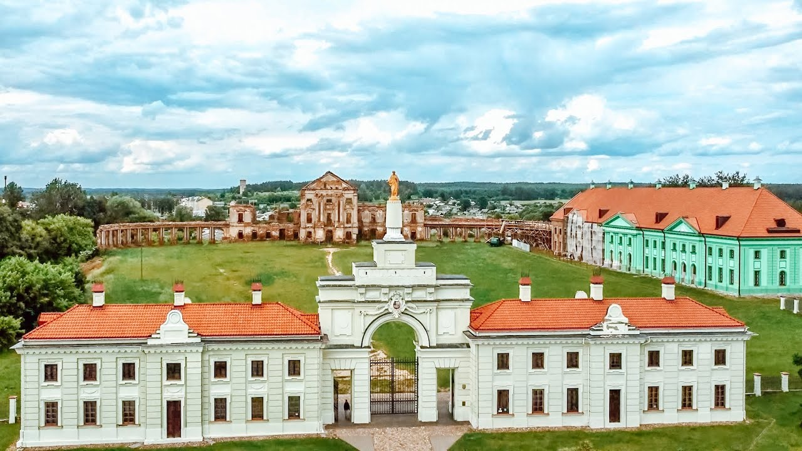

Ружа́нский дворе́ц — один из крупнейших дворцовых комплексов XVIII—XIX веков на территории современной Беларуси, собственность и резиденция князей Сапег. Построен в 1784—1786 годах в переходном от барокко к классицизму стиле архитектором Я. С. Беккером на основе стен предыдущего дворца начала XVII в. Разрушен во время Великой Отечественной войны.
В 1598 году Ружаны купил канцлер великий литовский Лев Сапега. Он построил здесь в 1602 году замок с тремя башнями, который имел скорее оборонительные функции. Неизвестно имя архитектора, однако в старинных ружанских записях, датированных 1602-м годом, упоминается о крупномасштабных строительных работах, без указания места проведения застройки. Скорее всего, замок возводился на месте старой усадьбы Тышкевичей, которым имение принадлежало ранее.
Первоначально дворец имел оборонительный характер — двухэтажный крестовидный в плане каменный объём дополняли три четырёхгранные башни. В центральной части дворца находились парадная зала и вестибюль с двусторонней лестницей, в боковых частях — жилые помещения, кабинет, библиотека. Анфилада помещений на первом этаже перекрывалась сводчатыми, а на втором — балочными перекрытиями. Под постройкой в больших сводчатых подвалах находились арсенал, архив, запасы провизии.
В 1784—1788 гг. придворный архитектор Сапег Ян Самуэль Беккер перестраивает древний дворец-замок. Одновременно зодчий возводит в низине перед дворцом приходской костёл и монастырь базилиан, а также кладбищенскую часовню и трактир. За своё талантливое творчество Беккер получил от Сапег пожизненную пенсию в 2150 злотых. Две башни древнего дворца были разобраны, а западная была включена в общий объём новой постройки, ставшей симметричной по композиции. Главный корпус приобрёл вид компактного двухэтажного прямоугольного в плане здания под высокой мансардовой «французской» крышей. Главный фасад в тридцать окон в центральной части выделялся поднятым на второй этаж пристенным портиком из двух пар колонн и пилястр, завершённых высоким треугольным фронтоном, заполненных скульптурным барельефом и увенчанным по углам гротескной скульптурой. На тыльном фасаде портику соответствовала широкая десятиколонная терраса, на которую выходили окна-двери бальной залы. Высокие, в барочно-райкальном профилированном обрамлении окна верхнего этажа свидетельствуют о его парадном назначении.
Я. Беккер проектирует и регулярный лучистый парк с каналами, водоёмами, стрижеными шпалерами. Парк преграждал параллельный дворцу водоём на реке Ружанке. Перспектива из каждой из стриженой липовой аллей замыкалась павильоном. К пейзажной зоне примыкал зверинец в виде пробитого просеками лесного массива. С приспособлением дворца под фабрику к 1834 г. парк фактически перестал существовать. Также во дворце с 1765 по 1791 годы существовал частный театр.
Войны с Россией, Швецией нанесли сильный урон замку, но богатые наследники за несколько десятилетий XVIII века обновили дворец. В 1784 году канцлер Великого княжества Литовского уже принимал в нём прибывшего на Гродненский сейм короля Станислава Августа Понятовского. Однако в 1786 году по иронии судьбы монументальный дворцовый ансамбль был переоборудован под суконную фабрику. Александр Сапега под влиянием факта раздела Речи Посполитой отдал дворец в аренду еврейскому предпринимателю Пинасу.
Дворцовый комплекс сгорел в 1914 году, частично реставрирован в 1930 г., в 1944 г. разрушен окончательно. Сохранились только остатки основных построек (главного и восточного корпусов), аркады, въездная арка и флигели по её сторонам.
Во время Первой мировой войны (1914) по недосмотру фабричных прачек во дворце произошёл сильнейший пожар, часть стен обрушилась. В межвоенный период предпринимались попытки восстановления, однако вследствие разрушений Великой Отечественной войны дворец окончательно превратился в развалины.
После Великой Отечественной войны состояние Ружанского дворца долгое время оставалось удручающе плачевным. Дворец не восстанавливался. Остатки дворцовых стен разрушались, частично были разобраны местными жителями на кирпичи для восстановления хозяйств в послевоенный период.
Летом 2008 года на территории дворцового комплекса были начаты раскопки и реставрация. Восстановление дворцового ансамбля началось с въездной арки и примыкающих к ней боковых флигелей. Согласно программе на дворец ежегодно будет выделяться более миллиарда рублей.
За пять лет отреставрированы западный и восточный флигели, планируется восстановление южного корпуса дворца, где находились театр и манеж. Тут разместятся отель и театр. Руины построек будут законсервированы.
Реставраторы стремятся использовать максимально приближённые к аутентичным материалы (псевдоаутентичный кирпич, черепица индивидуального производства).
В начале 2012 года на въездной арке поставлена скульптура Святой Анны, вместо уничтоженной на границе XIX—XX веков.
Согласно постановлению Совета Министров Беларуси от 3 июня 2016 года № 437 Ружанский дворец был включён в число 27 объектов, расходы на сохранение которых (в части капитальных расходов) могут финансироваться из республиканского бюджета.
По состоянию на конец 2024 года происходит реконструкция восточного корпуса, начатая в 2019 году. Восстановлен фасад (его покрасили в зелёный цвет, что вызвало противоречивые мнения, но, как говорят специалисты, именно такого цвета были эти стены в старину) и крыша, а также галерея, примыкающая к Центральному корпусу.
В отреставрированном восточном флигеле в 2011 был открыт музей, посвящённый истории рода Сапег. В другом крыле выставлена экспозиция из местных археологических находок и древнего оружия.